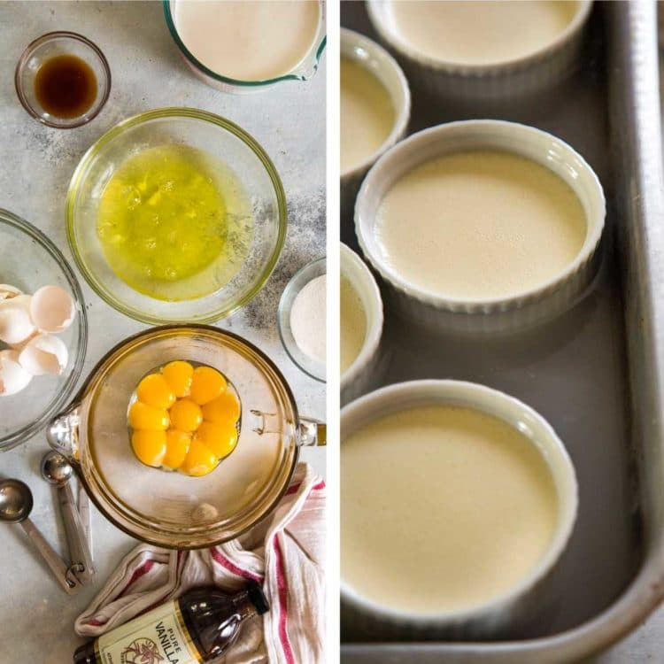
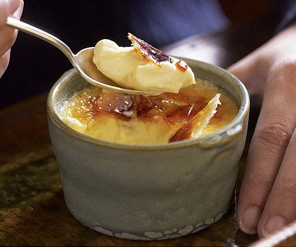

Beat egg yolks, 4 tablespoons white sugar and vanilla extract in a mixing bowl until thick and creamy.
Pour cream into a saucepan and stir over low heat until it almost comes to boil. Remove the cream from heat immediately. Stir cream into the egg yolk mixture; beat until combined.
Pour cream mixture into the top pan of a double boiler. Stir over simmering water until mixture lightly coats the back of a spoon, about 3 minutes. Remove mixture from heat immediately and pour into a shallow heat-proof dish.
Bake in preheated oven for 30 minutes. Remove from oven and cool to room temperature. Refrigerate for at least 1 hour or overnight.
Preheat oven to broil.
In a small bowl combine remaining 2 tablespoons white sugar and brown sugar. Sift this mixture evenly over custard. Place dish under broiler until sugar melts, about 2 minutes. Watch carefully so as not to burn.
Remove from heat and allow to cool. Refrigerate until custard is set again.
 
Savannah
Hancock Highschool
Exploring Computer Science Pilot Course, 3rd block
Last updated: May 2018
URL:savannuur.github.io/foodhowto
.png)